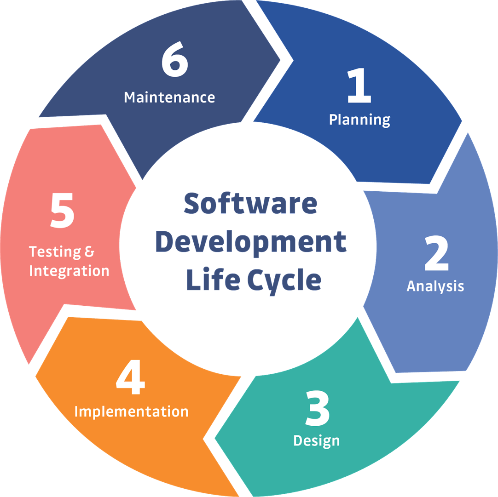
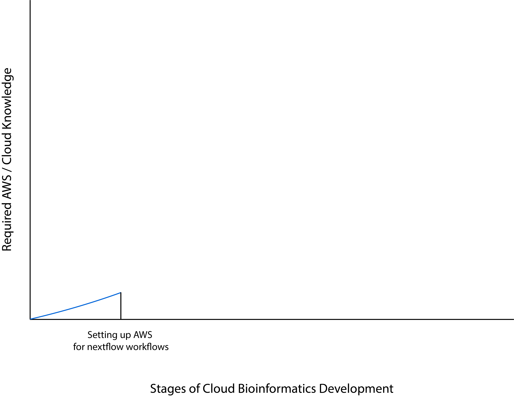
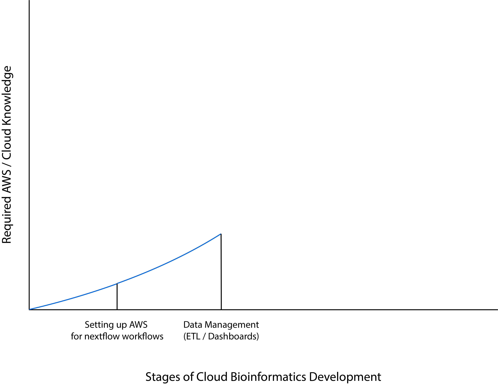
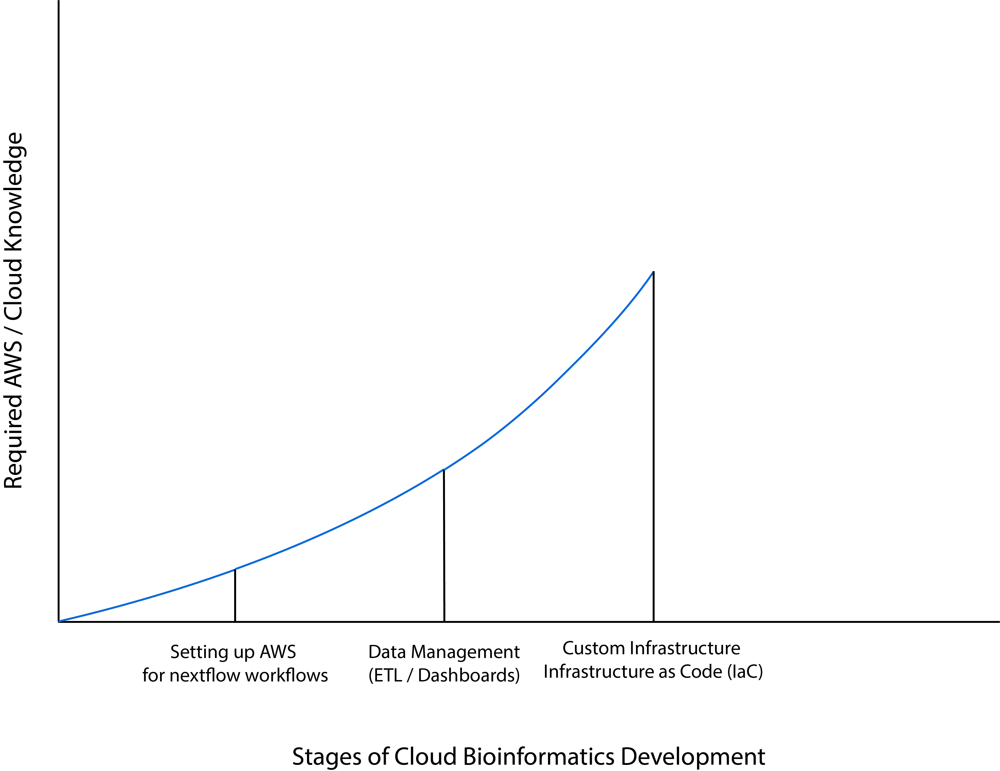
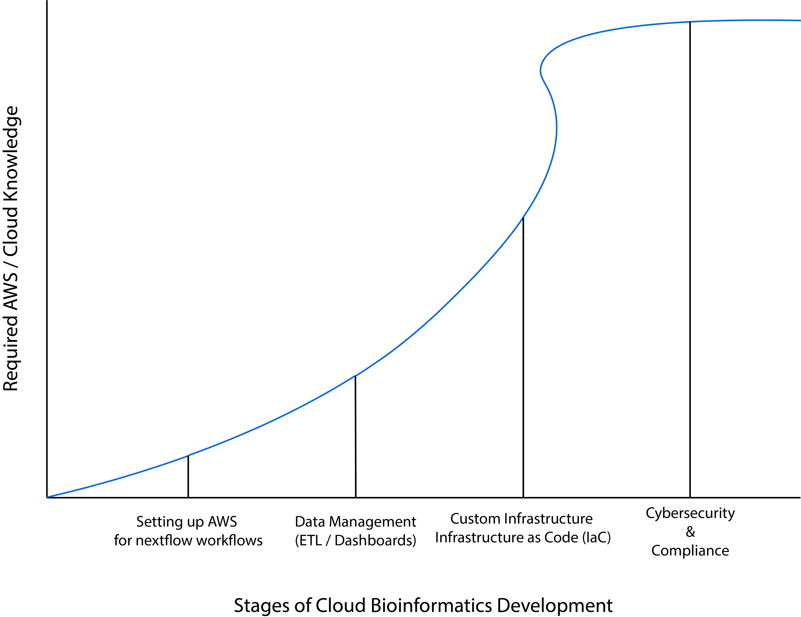
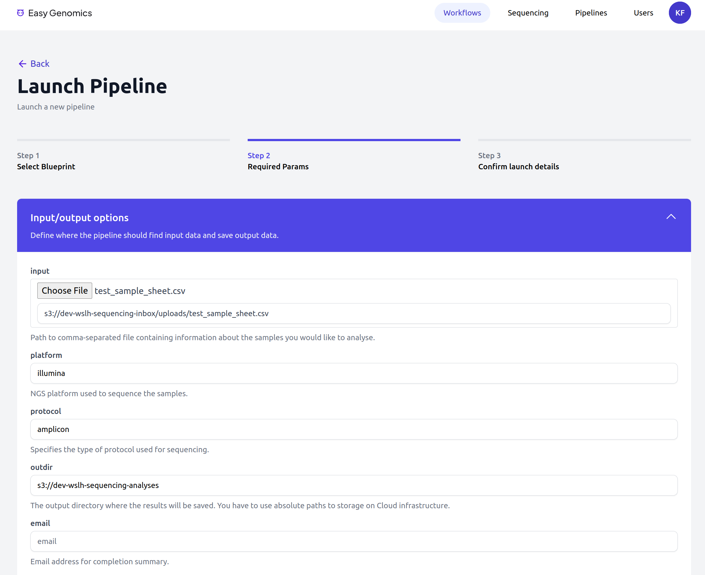
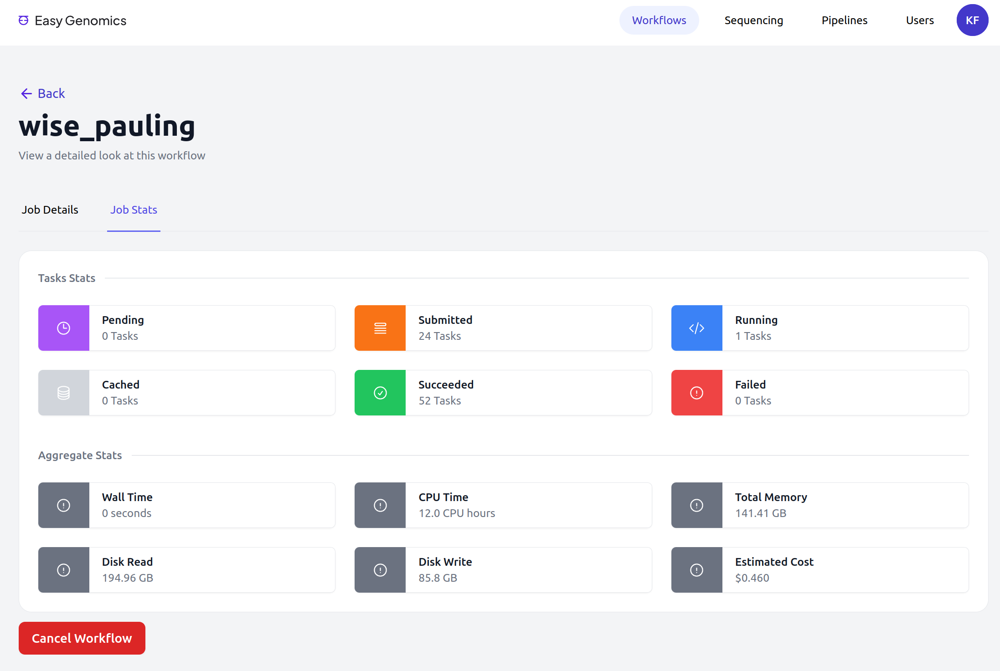

Diving in deep:
Exploring a cloud based genomic data lake
Kelsey Florek, PhD, MPH Senior Genomics and Data Scientist Wisconsin State Laboratory of Hygiene May 24, 2023

Supported By

AWS Diagnostic Development Initiative (DDI)
- The infrastructure
- Accessibility and Implementation
- Compliance
- Future Directions
- The infrastructure
- Accessibility and Implementation
- Compliance
- Future Directions
Iterative development
Stages of Development
- Running Nextflow Workflows
- Data ETL / Dashboards / Insights
- End to End Automation
- Data Integration across Public Health Partners
AWS Learning Curve
AWS Learning Curve
AWS Learning Curve
AWS Learning Curve
- The infrastructure
- Accessibility and Implementation
- Compliance
- Future Directions
Version Control
- Infrastructure Versioning
- Workflow Versioning
- Software Versioning
CAP Compliance
- Access Controls and Logs - IAM Provides Fine Grain access controls, CloudTrail Logs
- Data Integrity Checks - Data into and out of S3 automatically incorporates checksum integrity checks
- Data Provenance - trace files generated by nextflow allow tracking data through every workflow step
- Analysis Logs - CloudWatch logs most AWS services
- Encryption - Both in transit and at rest (no noticeable overhead)
- Data Backups - Automated Data Backups
HIPAA Eligibility
> 140 AWS Services are HIPAA Eligible (List of Eligible AWS Services)
HIPAA compliance is not about the platform or service but about how it is used
"In order to meet the HIPAA requirements applicable to our operating model, AWS aligns our HIPAA risk management program with FedRAMP and NIST 800-53, which are higher security standards that map to the HIPAA Security Rule."
- The infrastructure
- Accessibility and Implementation
- Compliance
- Future Directions
Easy Genomics Partnership

Easy Genomics - Minimal Viable Product
- Simplify the process of launching and monitoring workflows
- Provide the ability for users to upload sequence data through the web browser
- Allow users to download analysis results through the web browser
Easy Genomics

Easy Genomics
Easy Genomics

Easy Genomics
Easy Genomics

Easy Genomics and Nextflow Tower Training
August 14–16, 2023 | Arlington, VA
Amazon Web Services (AWS) and Two Bulls, in collaboration with Wisconsin State Laboratory of Hygiene (WSLH), have developed a no-code, user-friendly tool called Easy Genomics that enables organizations to scale their bioinformatics capacity with limited technical expertise. It uses Nextflow Tower API Gateway for an automated system with AWS services.
The in-person training will provide participants will an opportunity to gain hands-on experience with Easy Genomics, NextFlow, and Nextflow Tower. Applicants should have familiarity and comfort in the command line environment and be able to bring a laptop with wifi capabilities to the training. All travel expenses will be covered for the participants. Travel scholarships are available for participants and space is limited.
Acknowledgments
Special Thanks
- UW-Madison Public Cloud Team
- UW-Madison Office of Cybersecurity
- Dr. Dawn Heisey-Grove, MPH PhD - Public Health Analytics Leader, AWS
- Dr. Christin Hanigan, PhD - Advanced Molecular Detection Manager, APHL